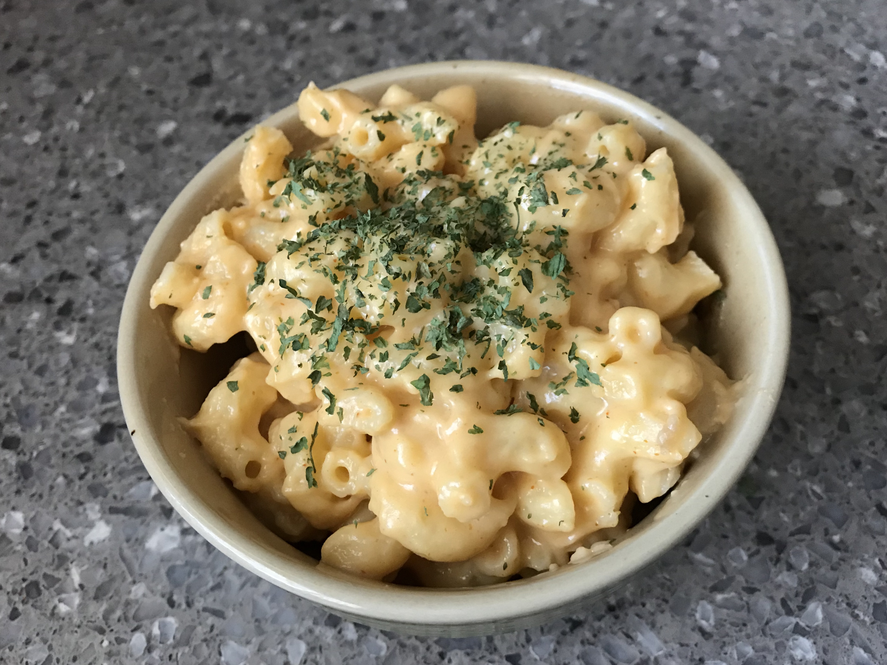

Favorite Foods
|
Ingredients:
- Bread
- 1 kg of meat
- Cheese
- Salt to taste
- Black Pepper to taste
|
Preparation Mode:
- In a bowl or bowl, place all ground beef, salt and pepper;
- Mix everything with your hands, kneading and mixing well;
- Then, with your hands, flatten the balls to shape the hamburger;
- If you have a molder, just put the meat inside and flatten it;
- In a skillet, heat a drizzle of olive oil and accommodate the burger;
- Brown on both sides and serve.
|
|
Ingredients:
- 1,5 kg of Potato
- 1 liter of oil
- salt to taste
- 1/2 tablespoon cornstarch
|
Preparation Mode:
- Cut the smears into toothpicks and dry them with paper towels.
- Put the oil to heat, when it is very hot, remove 1/2 cup of this oil and mix in 1/2 spoon of corn starch.
- After mixing, return this oil to the pan, fry the potatoes over medium heat until golden brown.
- It is a tip that is very worthwhile, because the smocks are very dry.
|
|  |
Ingredients:
- 100 g of snail-type pasta
- ½ cup (tea) of fresh cream
- 2 tablespoons of grated parmesan cheese
- 1 pinch of nutmeg powder
- salt and freshly ground black pepper to taste
|
Preparation Mode:
- In a bowl mix the pasta, fresh cream, nutmeg, salt and grated Parmesan cheese.
- Place an untadover video refractory with butter and take it to the preheated oven at 180ºC for 25 to 30 minutes, or until it is completely browned without becoming dry inside. Serve immediately.
- Note: You can add pieces of fried bacon to this mixture.
|
 |
Ingredients:
- 1 can of condensed milk
- 1 tablespoon butter
- 3 tablespoons of powdered chocolate
- 2 cups of granulated chocolate
|
Preparation Mode:
- Add these ingredients in a pan. Add the chocolate and the butter, and stir until it creates consistency, that is, until it begins to thicken.
- Pour everything into a glass bowl and take the refrigerator. Wait approximately an hour and a half, and you're ready, just enjoy it!
|